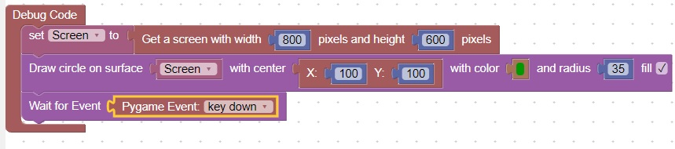
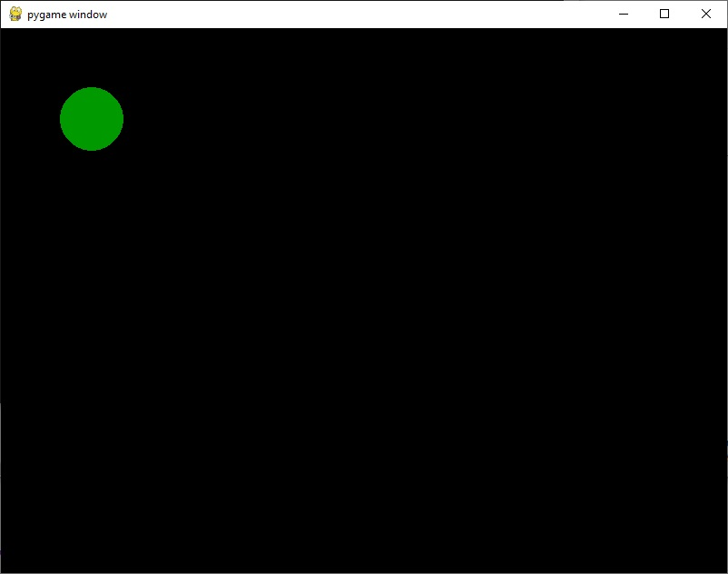

<H1>How to draw a circle and fill </h1>
A circle can be drawn and then filled based on the fill checkbox: <br>
<br>
In the background, when width is set to 0, draw.circle fills the circle<br>
The screen will look like: <br>
<br>
<hr>

